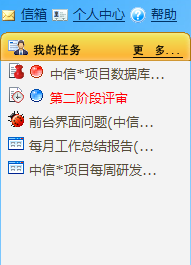
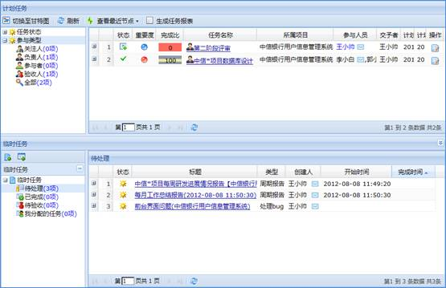
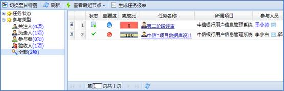
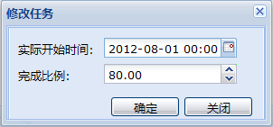
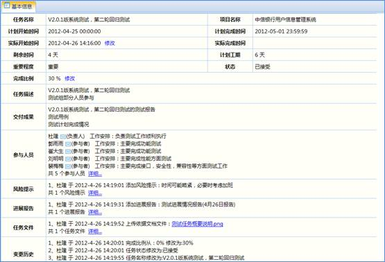
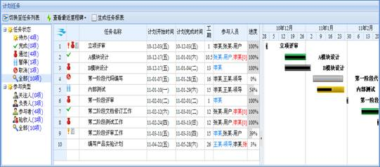
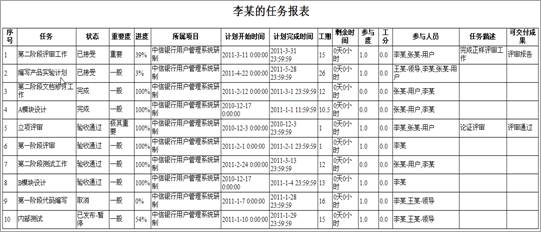
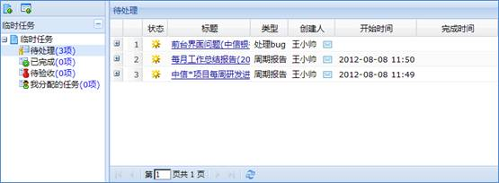
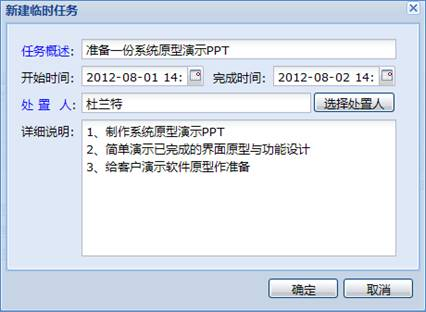
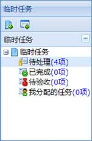

我的任务主要是辅助项目人员实时查看分配给自己的任务、反馈任务的进展情况、汇报任务执行结果。登录系统后，在首页侧边栏可以看到我的任务简要窗口，在该窗口中可以看到我的待办任务列表，如下图所示：

图 我的任务侧边栏
点击“更多”进入我的任务主界面。任务包括计划任务和临时任务两类。计划任务来源于项目计划，在项目计划模块添加并发布的任务将在处理人的任务列表中显示。临时任务来源于缺陷管理\定期报告\绩效考核以及临时任务、周期性任务。缺陷报告人在提交缺陷时指定缺陷处理人，该缺陷将在处理人的临时任务列表中显示。在定期报告中分派的报告也会在报告人的临时任务列表中显示。绩效考核中执行述职和考核的任务也在执行人的临时任务列表中显示。在我的任务管理页面也可以分派临时任务、周期性任务。主界面如下图所示：

图 我的任务
可以按任务状态或者用户在任务中的参与类型查询任务。如下图所示：

图 任务分类列表
在任务列表中选择一个状态为“已发布”的任务，点击右键菜单的“接受任务”接受任务。已接受的任务状态便由“已发布”变为“已接受”。
点击右键菜单的“修改任务”或操作区的“修改”按钮可以修改完成比例。当完成比例为100%时，任务的状态变为“完成”，实际开始时间默认为完成比例修改为100%的时间，如下图所示：

图 修改完成比例
注意：
双击任务列表中“完成比例”一行，使之变为编辑状态后修改完成比例。
点击任务列表右键菜单的“查看信息”或者点击任务名称的链接查看任务的详细信息，任务的详细信息界面，如下图所示：

图 任务详细信息
点击工具栏的“显示甘特图”按钮将任务列表切换到甘特图，任务甘特图，如下图所示：

图 甘特图界面
点击工具栏的“生成任务报表”按钮可以统计任务的相关信息和完成情况，如下图所示：

图 任务报表
临时任务在我的任务列表下面，整体界面，如下图所示：

图 临时任务
通过“新建临时任务”按钮添加临时任务，系统弹出的添加临时任务界面，如下图所示：

图 新建临时任务
通过工具栏的“新建周期性任务”添加也可以添加周期性任务。
临时任务包括周期性任务\报告\缺陷任务票\临时任务\述职报告\绩效考核任务。对于临时任务，选择右键菜单相应的处理方式即可处理。临时任务可自己处理，也可转给别人。临时任务处置完成后，任务分派者需要验收任务。其他的任务可以通过点击链接进入处理界面。
选择临时任务菜单的不同选项即可查询相应的任务，如下图所示：

图 查询临时任务